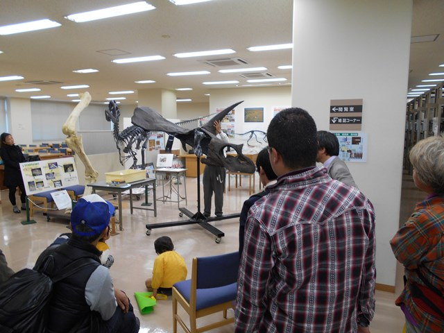
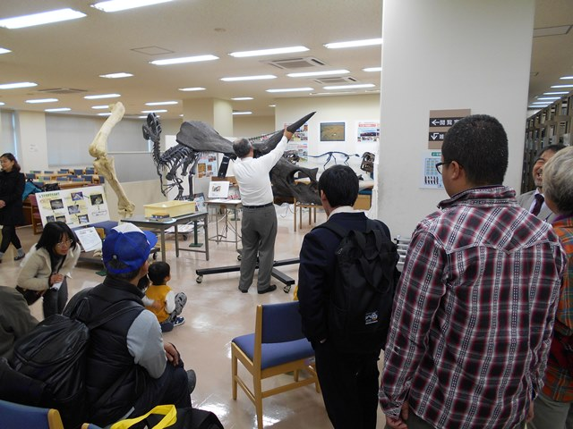
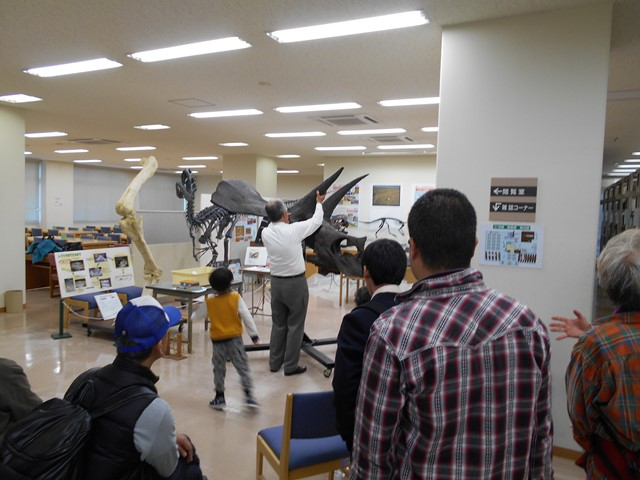
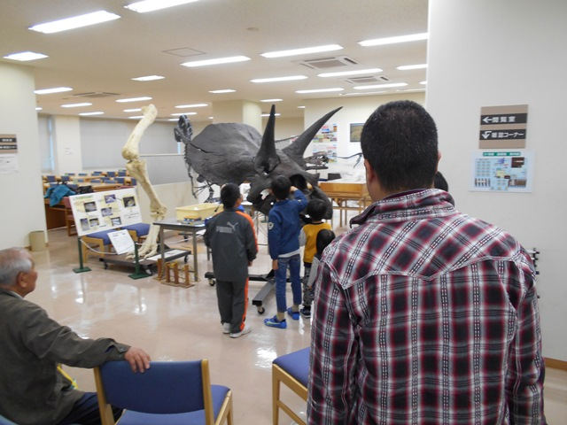

ドクショル講演会2016平成28年11月12日ドクショル講演会が、学外者36名・学内者42名の計78名の参加者を得て行われました。 ●日 時：平成28年11月12日（土）１３：３０〜１５：３０ ●テーマ：『恐竜 発掘現場レポート』−日本で、モンゴルで、そしてアジアから世界へ− ●場 所：岡山理科大学A1号館2階A0122講義室 ●参加者：78名（学外の方36名＋学内の方42名） まず、最初に岡山理科大学図書館長榊原道夫先生より開会の挨拶があり、講演会が始まりました。 野田 芳和（福井県立恐竜博物館副館長） まず、恐竜の基礎的知識について説明がありました。 日本での恐竜発掘の歴史について概観されました。日本最初の恐竜発見は1934年サハリンでのニッポノサウルスであったことに続いて、岩手県・北海道・三重県・石川県・兵庫県・淡路島・長崎県・熊本県などでの発掘について紹介がありました。 日本列島は元々大陸にくっついていた事を年代別の地図を示しながら説明されました。北陸あたり（福井・石川・富山・岐阜・長野県）は、元は大陸にあったので、特に恐竜化石が見つかりやすいそうです。 福井県での最初の恐竜発見は、女子中学生が石川県で発見（1982年）し、福井県で鑑定して恐竜化石であることがわかったものといったことや、石川で出るのなら福井でも出るのではないかということで福井での発掘が始まったことなどのエピソードが紹介されました。 また、海外との共同研究（タイなど東南アジア）の状況などが報告されました。 石垣 忍（岡山理科大学生物地球学科教授） モンゴルにおける恐竜研究の歴史（1922年のアメリカ自然史博物館のチャップマンの調査〜2015年−の岡山理科大学・モンゴル共同調査隊までの調査）について説明があり、調査後に出版された本の紹介や、かつてはその本に大変感銘を受けたことなどが述べられました。 グリミムス（胴は恐竜の特徴があり、尻尾の先は鳥類に似ている）、アヴィミムス（脚の先は鳥の特徴がある）、タルボサウルスの子供（理大にレプリカあり）、プロトケラケプス（40体の化石がまとまって発見され、そのうち15体は子供）、ヴェロキラプトル、トトロドンなどモンゴルの調査で見つかった恐竜化石について紹介されました。 また、理科大は、地球年代学の研究拠点でもあり、病理学を研究しているグループなどがあり、共同研究により、新しい分野の研究が期待されることが説明されました。 皆さんに書いていただいた質問シートを元に、質問に答える形で、発掘についての様々な話がされました。 講演会終了後、石垣先生の解説により、21号館3階図書館の恐竜展示スペースの見学が行われました。 最後に、他の場所での展示より戻ってきたトリケトラトプス頭骨の骨格標本を組み立てるところを、石垣先生が実演し、皆さんに見ていただきました。     |